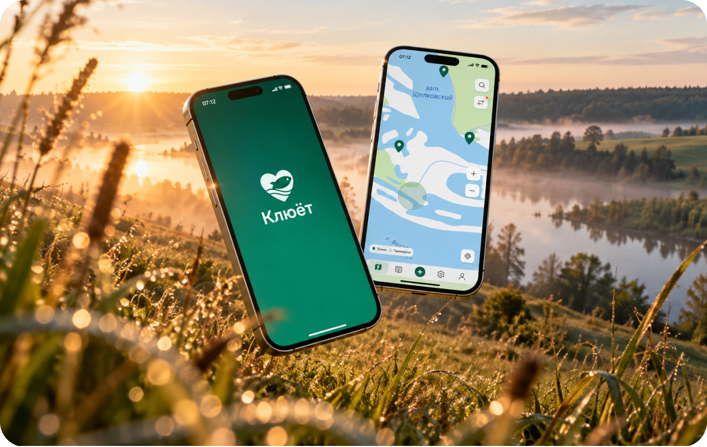
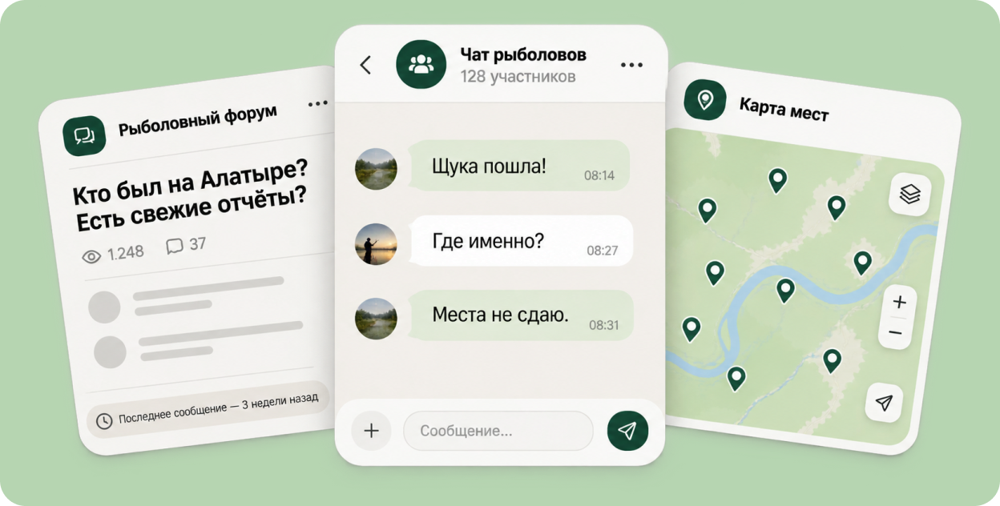
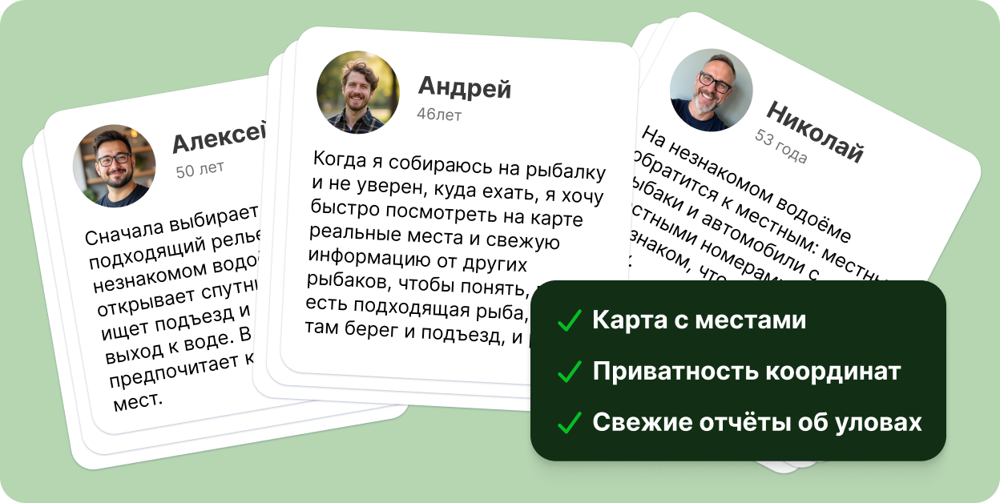
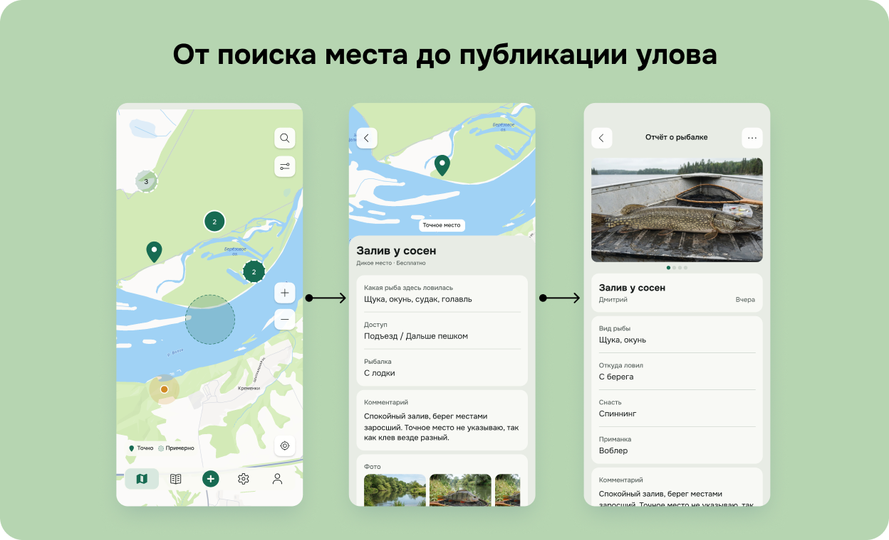
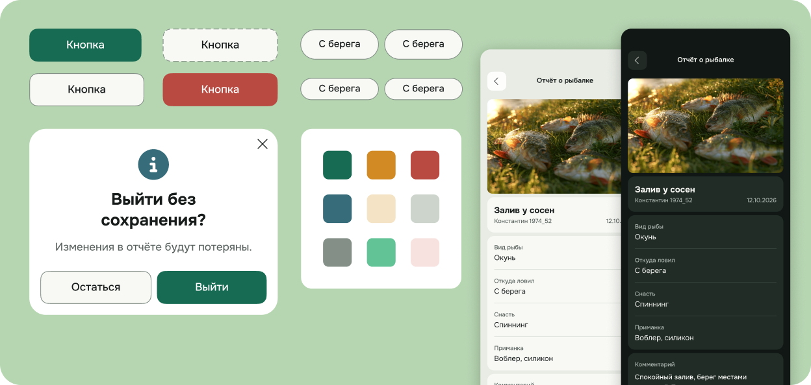
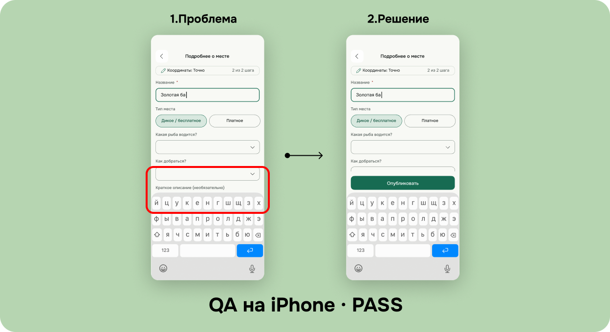
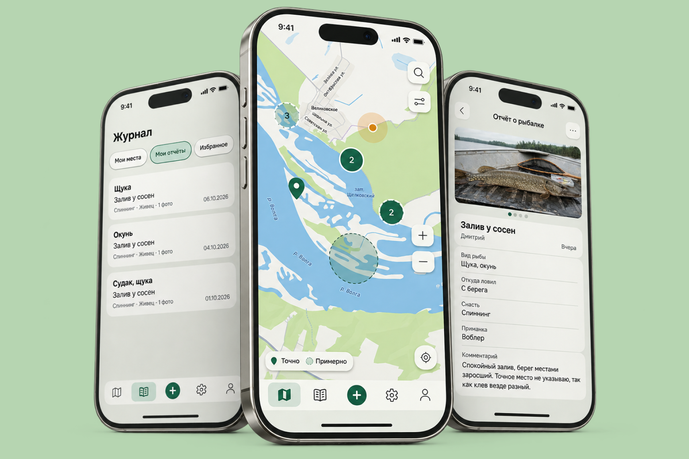
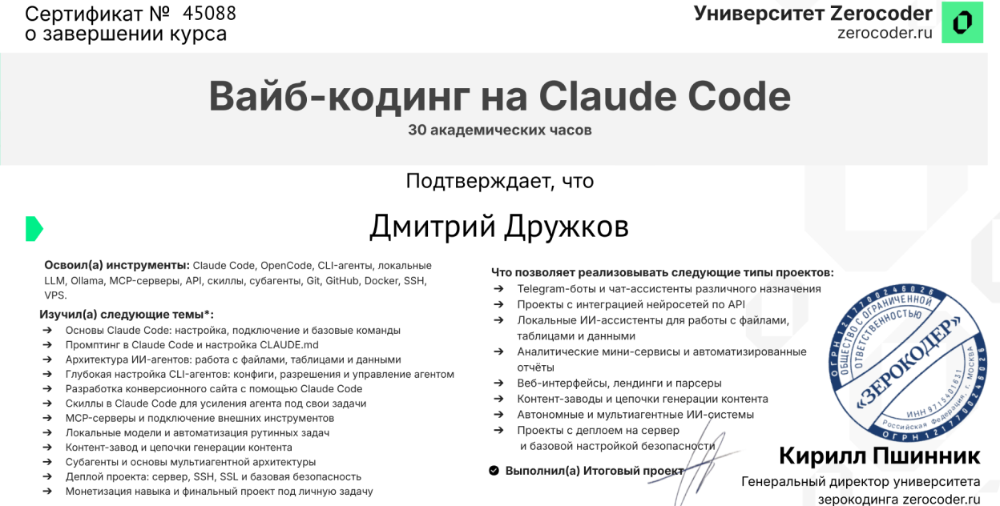
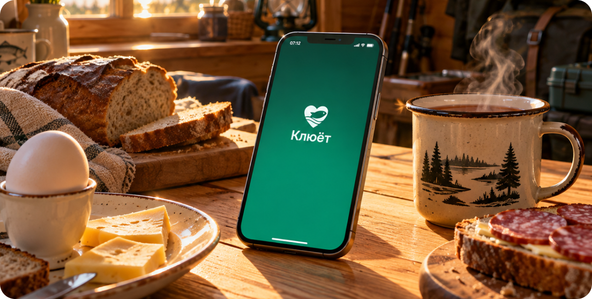

03
Клюёт. От идеи до работающего iOS-приложения
Спроектировал и разработал приложение для рыболовов с помощью AI — от исследования пользовательских задач до работающего MVP.

01
Проблема
Информация о рыболовных местах разбросана по форумам, чатам и картам. Часто непонятно, где ловили недавно, на что клевало и стоит ли вообще ехать. При этом точными координатами хороших мест рыболовы делиться не спешат.

02
Исследование
Начал с пользовательских сценариев и интервью с рыболовами. Изучил, как выбирают место, какой информации доверяют и почему не хотят раскрывать координаты. Эти наблюдения легли в основу первой версии продукта.

03
Проектирование
Построил основные сценарии вокруг карты: поиск места, просмотр свежих отчётов, публикация улова и ведение журнала. Отдельно проработал приватность координат, фильтры и поведение интерфейса на небольшом экране.

04
Дизайн-система
Создал дизайн-систему для iOS: цветовые токены, типографику, компоненты, состояния и светлую и тёмную темы. Это помогло сохранять единый визуальный язык и быстрее переносить решения из Figma в приложение.

05
Разработка с AI
Использовал AI для реализации приложения на React Native и Expo. Сам проверял сценарии на iPhone, находил ошибки и управлял доработками. Например, исправил поведение формы при открытии клавиатуры — от обнаружения проблемы до успешного QA.

06
Работающий MVP
Реализовал основные сценарии: карту рыболовных мест, фильтры, отчёты об уловах, журнал, избранное и настройки. Провёл ручное QA, исправил найденные проблемы и подготовил рабочий MVP для дальнейшего развития.

Курсовой проект и сертификат
«Клюёт» стал моим курсовым проектом, но с самого начала я развивал его как самостоятельный продукт. Обучение дало возможность пройти полный цикл — от продуктовой гипотезы до работающего мобильного приложения.


Результат и дальнейшие планы
Из собственной идеи получился работающий iOS-продукт с дизайн-системой и основными пользовательскими сценариями. Следующий этап — завершить подготовку к релизу, проверить продукт на реальных пользователях и развивать его на основе обратной связи.
